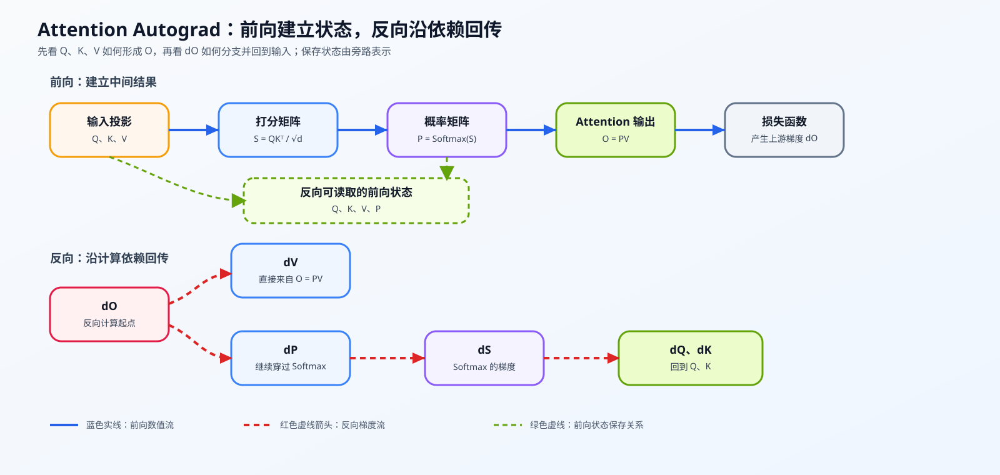
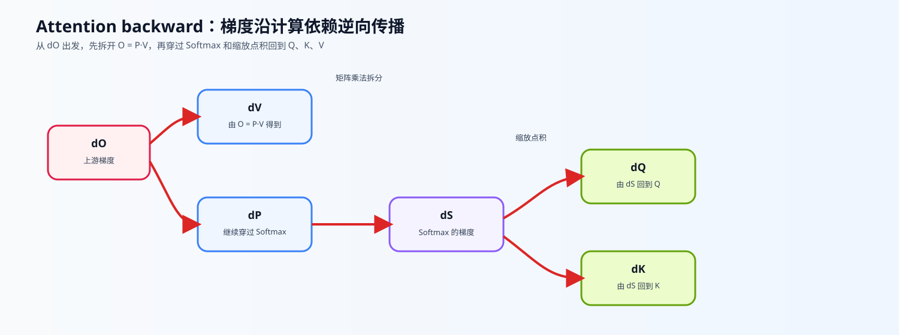

17. Attention Backward and Custom Autograd | Attention 反向传播与自定义 Autograd
难度： Medium | 环境： CPU-first | 标签： 显存优化, Autograd, 反向传播 | 目标人群： 显存优化学习者
本节导读
Attention 的前向计算把 Q、K、V 组合成输出；反向传播则沿着相反的依赖关系，把输出梯度传回这三个输入。本节从这条梯度链出发，说明中间状态为什么会影响反向计算的显存占用，并把它与后续的分块计算联系起来。
学习时可以先沿着 dO→dV、dP→dS→dQ、dK 的方向观察依赖关系，再把每个中间量的形状、保存状态和显存代价对应起来。
关键词： Autograd, backward, gradcheck
展开官方原理、图解与任务要求
前置阅读
导语： 先理解 PyTorch 如何记录计算图，并复习 Attention 的 Q/K/V 前向路径，再进入手写 Attention backward。训练循环属于辅助背景。
Step 1: Attention backward 的整体梯度链
把 Attention 看成一条依赖链：前向阶段由 Q、K、V 形成 S、P 和 O；反向阶段从输出梯度 dO 出发，先分成 dV 与 dP，再经过 dS 回到 dQ 和 dK。其中 dO 是这条反向链的起点。
先把每个量的形状和流向对齐，再把梯度依赖、保存状态和显存账本放到同一条链上观察。
张量形状说明：
- Q,K,V∈RB×N×d（batch B、序列长度 N、特征维数 d）
- S,P∈RB×N×N
- O∈RB×N×d

Step 2: 链式法则
先把图中的 dO 理解成损失函数传给 Attention 输出 O 的梯度。因为 O=PV，它会分成两条支路：一条直接求 dV；另一条先求 dP，再穿过 Softmax 得到 dS，最后回传到 Q 和 K。
沿着图中的两条支路，依次推导下面四个结果。
1. 求 dV
因为 O=PV，根据矩阵乘法求导法则：
dV=PT⋅dO
2. 求 dP（关键衔接）
同样因为 O=PV，对 P 求导可得：
dP=dO⋅VT
3. 计算 Softmax 的梯度
我们需要从 dP 求得 dS。Softmax 的雅可比矩阵非常特殊：
已知 Pi=∑eSjeSi，应用链式法则后，可以按行写成下面的形式：
dS=P⊙(dP−row_sum(P⊙dP))
(注：⊙ 表示 Element-wise 逐元素乘法。后面的加和项是通过广播机制实现的)
4. 求 dQ 和 dK
此时我们已经拿到了 dS。本节统一使用缩放点积定义 S=dQKT，因此：
dQ=dS⋅K⋅d1
dK=dST⋅Q⋅d1

Step 3: saved tensors 与反向显存代价
反向计算需要前向阶段留下部分中间状态。显式 Attention 路径通常要保留 Q、K、V 以及归一化后的 P，再用 numel × element_size 估算它们的理论容量；其中 P 含有两个序列维度，因此序列变长时，保存容量和 HBM 读写都会受到放大。这个账本用于解释压力来源，不等同于 CUDA 峰值。若反向仍需要归一化结果，就要思考能否不保存完整的 P，而是在分块计算中保留足够的统计量。FlashAttention 通过分块计算、online softmax 和片上数据复用，改变了中间状态的保存与搬运方式；实际显存和速度收益仍需结合 GPU、序列长度、dtype 和 workload 测量。
| 前向状态或策略 |
反向用途 |
需要关注的代价 |
后续机制 |
| Q/K/V |
回到输入投影的梯度 |
保存量随 batch、序列长度和 head 维度变化 |
checkpoint 可选择重算部分状态 |
| P |
计算 dV、dP 并穿过 Softmax |
形状含 N×N，可能增加激活显存和 HBM 读写 |
FlashAttention 避免显式保存完整 P |
| 只保存边界或重算 |
在反向阶段恢复中间结果 |
用额外计算换保存空间 |
activation checkpointing / online softmax |
| 理论账本 |
统计各状态的 numel 与 dtype 字节数 |
只能说明保存对象的容量下界 |
真实峰值需由 profiler 或项目 benchmark 验证 |
Step 4: 实现并验证 Attention backward
现在把前面三步的公式和状态关系写成 torch.autograd.Function，再用数值和自动求导结果检查实现。下面的表格把实现范围、关键机制和验证方式放在一起，代码单元中的 TODO 与这些行一一对应。
| 实现部分 |
机制 |
验证方式 |
| 输入范围 |
无 mask、无 dropout、单头、等长 Q/K/V 的缩放点积 Attention |
确认输入形状与 dtype 满足测试条件 |
forward |
计算 S → P → O，保存 backward 需要的状态 |
检查输出形状和有限值 |
backward |
依次计算 dV → dP → dS → dQ/dK；Softmax 按行计算修正项 |
与 PyTorch 自动求导对照 |
ctx.saved_tensors |
读取前向保存的 Q/K/V/P |
检查状态与梯度形状对应 |
gradcheck |
用数值梯度检验手写梯度 |
通过容差检查 |
测试
运行下面的测试单元，确认手写 backward 和 PyTorch 自动求导保持一致。
题目与测试代码 · Cell 8
class CustomAttention(torch.autograd.Function):
"""无 mask、无 dropout 的教学版缩放点积 Attention。
输入和输出均使用 [B, N, d]；本题只实现单头、等长 Q/K/V 的路径。
"""
@staticmethod
def forward(ctx, q, k, v):
"""计算缩放点积 Attention。
Args:
q, k, v: [B, N, d] 张量，device 和 dtype 必须一致。
Returns:
[B, N, d] 的 attention 输出。
"""
if q.ndim != 3 or k.ndim != 3 or v.ndim != 3:
raise ValueError('q、k、v 必须是 [batch, seq_len, head_dim] 三维张量')
if q.shape[:2] != k.shape[:2] or k.shape[:2] != v.shape[:2]:
raise ValueError('q、k、v 的 batch 和序列长度必须一致')
if q.size(-1) != k.size(-1) or v.size(-1) != q.size(-1):
raise ValueError('q、k、v 的 head_dim 必须一致')
if q.device != k.device or k.device != v.device:
raise ValueError('q、k、v 必须位于同一 device')
if q.dtype != k.dtype or k.dtype != v.dtype:
raise TypeError('q、k、v 必须使用相同 dtype')
# 1. 缩放点积
d_k = q.size(-1)
scale = 1.0 / math.sqrt(d_k)
scores = torch.matmul(q, k.transpose(-2, -1)) * scale
# 2. Softmax 获取概率 P
p = F.softmax(scores, dim=-1)
# 3. 乘上 V 得到输出
out = torch.matmul(p, v)
# 保存反向传播需要用到的张量
ctx.save_for_backward(q, k, v, p)
ctx.scale = scale
return out
@staticmethod
def backward(ctx, dout):
"""根据上游输出梯度返回 q、k、v 的梯度。
Args:
dout: 与 forward 输出同形状的上游梯度。
Returns:
dq、dk、dv，形状分别与 q、k、v 相同。
"""
# 这些张量在 forward 中由 ctx.save_for_backward 保存，backward 会重新读取它们。
q, k, v, p = ctx.saved_tensors
scale = ctx.scale
if dout.shape != q.shape:
raise ValueError('dout 必须与 Attention 输出具有相同形状')
# ==========================================
# TODO 1: 求 dV
# 提示：由 out = P @ V，使用 P.transpose(-2, -1) @ dout。
# ==========================================
# dv = ???
# ==========================================
# TODO 2: 求 dP
# 提示：由 out = P @ V，使用 dout @ V.transpose(-2, -1)。
# ==========================================
# dp = ???
# ==========================================
# TODO 3: 穿过 Softmax 求 dS
# 提示：对最后一维求 row_sum，避免显式构造 Softmax 雅可比矩阵。
# ==========================================
# dp_mul_p = ???
# row_sum = ???
# ds = ???
# ==========================================
# TODO 4: 求 dQ 和 dK（注意 scale 会同时传回两条输入支路）
# 提示：由 S = Q @ K.transpose(-2, -1) * scale 回传到 q / k。
# ==========================================
# dq = ???
# dk = ???
return dq, dk, dv
题目与测试代码 · Cell 10
# 运行此单元格以测试你的实现
def test_attention_backward():
"""验证前向数值、输入梯度形状、梯度数值和输入校验。"""
torch.manual_seed(42)
B, N, d = 2, 8, 16
# 使用 float64，便于 gradcheck 用有限差分检查手写 backward。
q = torch.randn(B, N, d, dtype=torch.float64, requires_grad=True)
k = torch.randn(B, N, d, dtype=torch.float64, requires_grad=True)
v = torch.randn(B, N, d, dtype=torch.float64, requires_grad=True)
print("1. 测试前向传播和输出形状...")
custom_out = CustomAttention.apply(q, k, v)
scores = torch.matmul(q, k.transpose(-2, -1)) / math.sqrt(d)
ref_out = torch.matmul(F.softmax(scores, dim=-1), v)
assert custom_out.shape == (B, N, d), "Attention 输出形状不一致！"
assert torch.isfinite(custom_out).all(), "前向输出包含 NaN 或 Inf！"
assert torch.allclose(custom_out, ref_out), "前向传播结果不一致！"
print("\n2. 进行梯度数值检验 (Gradcheck)...")
assert torch.autograd.gradcheck(CustomAttention.apply, (q, k, v), eps=1e-6, atol=1e-4)
# 用同一组输入分别回传，检查 q/k/v 的梯度形状、有限性和数值。
q_ref, k_ref, v_ref = [t.detach().clone().requires_grad_() for t in (q, k, v)]
ref_scores = torch.matmul(q_ref, k_ref.transpose(-2, -1)) / math.sqrt(d)
torch.matmul(F.softmax(ref_scores, dim=-1), v_ref).sum().backward()
q_custom, k_custom, v_custom = [t.detach().clone().requires_grad_() for t in (q, k, v)]
CustomAttention.apply(q_custom, k_custom, v_custom).sum().backward()
for custom_grad, reference_grad, tensor in zip((q_custom.grad, k_custom.grad, v_custom.grad), (q_ref.grad, k_ref.grad, v_ref.grad), (q_custom, k_custom, v_custom)):
assert custom_grad.shape == tensor.shape, "梯度形状与输入不一致！"
assert torch.isfinite(custom_grad).all(), "梯度包含 NaN 或 Inf！"
assert torch.allclose(custom_grad, reference_grad, atol=1e-5), "手写梯度与 PyTorch 结果不一致！"
# 输入校验应报告具体原因，而不是把错误伪装成 TODO 未完成。
bad_k = torch.randn(B, N + 1, d, dtype=torch.float64)
try:
CustomAttention.apply(q.detach(), bad_k, v.detach())
except ValueError as error:
assert "batch 和序列长度" in str(error)
else:
raise AssertionError("不匹配的序列长度应该触发 ValueError")
print("✅ All Tests Passed! Attention 反向传播实现通过测试。")
test_attention_backward()
本区由当前 Notebook 题目区生成。下面的精讲用于概念练习；回到 Notebook 时以本区的函数签名、TODO 和测试为准。参考答案及可选实验请在 Notebook 中查看。